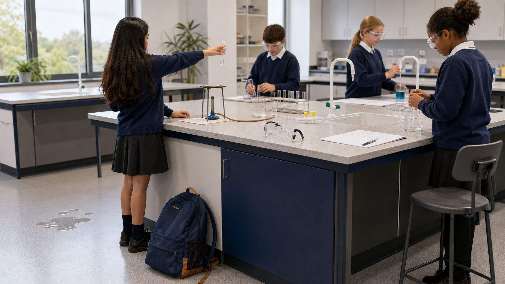

How do scientists make a laboratory safe enough to learn in?
Learn the equipment, represent it clearly and reason from hazard to control.
Name it. State its use. Sketch its shape.
Choose equipment by its job
First pair: measuring a volume and holding a small sample.
The shape supports the job
Second pair: mixing with less splashing and heating with a controlled flame.
A diagram should be clear enough to copy and use
one clear pencil line and a ruler where needed.
shading, sketchy repeated lines and decorative detail.
with straight horizontal lines that do not cross.
Teacher live model: draw a beaker, place the open top correctly, then add one horizontal label line.
Build the diagram one decision at a time
Use one continuous shape with a clear opening.
Remove shading and repeated sketch lines.
Use a ruled horizontal line beside the apparatus.

See, Think, Wonder
Look closely before naming the hazard or judging the risk.
State only what is visibly happening.
What harm could follow, and why?
What control would reduce the risk?
Name the source, the possible harm and the control
Every link must refer to the same situation.
source of harm
A school bag is blocking the laboratory walkway. Which statement names the hazard?
If fewer than 80% are secure, sort the four statements into hazard, harm, risk and control, then recheck.
Underline one secure feature. Box one place that needs teacher feedback.
Safe laboratories depend on shared responsibility
A safe learning community protects wellbeing and gives everyone access to practical science.
Complete the chain in one sentence
The hazard is... This could... The risk is reduced by...